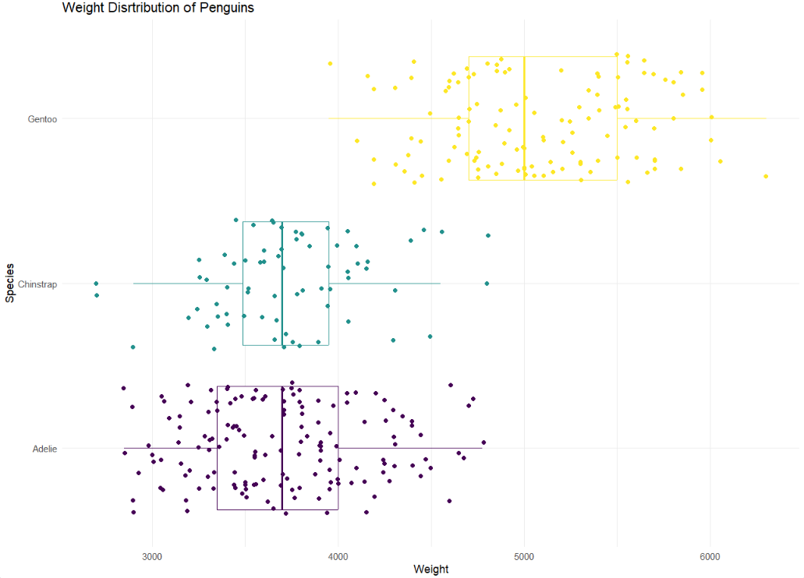

For this ae, we’ll use the tidyverse and palmerpenguins packages.
Packages
library(tidyverse)
── Attaching core tidyverse packages ──────────────────────── tidyverse 2.0.0 ──
✔ dplyr 1.1.2 ✔ readr 2.1.4
✔ forcats 1.0.0 ✔ stringr 1.5.0
✔ ggplot2 3.4.2 ✔ tibble 3.2.1
✔ lubridate 1.9.2 ✔ tidyr 1.3.0
✔ purrr 1.0.1
── Conflicts ────────────────────────────────────────── tidyverse_conflicts() ──
✖ dplyr::filter() masks stats::filter()
✖ dplyr::lag() masks stats::lag()
ℹ Use the conflicted package (<http://conflicted.r-lib.org/>) to force all conflicts to become errors
library(palmerpenguins) #The data set name is penguins
What are the #| above?
Add response
Which ones will we use during the semester? State and define them below.
Add response
Data
The dataset we will visualize is called penguins. Let’s glimpse() at it.
# insert code here
Now, pipe the penguins data into the glimpse function to produce the same result.
# insert code here
What types of variables are we working with in this data set?
Add response here
Visualizing penguin weights - Demo
Useful links:
https://ggplot2.tidyverse.org/reference/
Single variable
Note
Analyzing the a single variable is called univariate analysis.
Create visualizations of the distribution of weights of penguins.
Make a histogram by filling in the ... with the appropriate arguments. Set an appropriate binwidth. Hint: you can run names(data.set) in your console if you need a quick reminder on the variable names.
penguins |>ggplot( aes(x = ...)) +#type variable name here ... #type geom here
penguins |>ggplot(aes(x = body_mass_g)) +geom_boxplot() + ... # type theme here
Why can / should we use themes?
Add response
Two variables
Note
Analyzing the relationship between two variables is called bivariate analysis.
Create visualizations of the distribution of weights of penguins by species. Note: aesthetic is a visual property of one of the objects in your plot. Aesthetic options are:
shape
color
size
fill
Make a histogram of penguins’ weight where the bars are colored in by species type. Set an appropriate binwidth and alpha value. At the same time, comment each line of code to articulate what it’s doing.
Now, let’s use the function theme to turn off the legend (for practice). Theme (different from adding a color theme) allows us to control a lot of the visual and text features of our plot. Please see the following reference here: https://ggplot2.tidyverse.org/reference/theme.html
Add the following code to the above plot to turn off the legend: theme(legend.position = "none")
What if we don’t want the overlap? We can use facet_wrap to split the histograms apart! This function takes the name of the variable you want to split by, and how many cols/rows you want your plots to show up in. Run ?facet_wrap in your console and read the first two arguments of the function.
penguins |>ggplot( aes(x = body_mass_g, fill = species )) +geom_histogram(binwidth =200, alpha = .7) + ...
In 1-2 sentences, describe what you see in the plot you created.
Add Response
If you want to make a series of plots based on more than 1 variable, you can use facet_grid. For more information on the difference, please reference the following: https://stackoverflow.com/questions/20457905/whats-the-difference-between-facet-wrap-and-facet-grid-in-ggplot2
Create side-by-side boxplots to compare body mass across species.
# insert code here
We need to make sure that we include an informative title, axes should be labeled. We can do that using the labs function. Let’s change the code above to do so by explore the labs function and the following arguments.
title
subtitle
xlab
ylab
color
caption
We need to think critically about color when thinking about creating visualizations for a larger audience: https://ggplot2.tidyverse.org/reference/scale_viridis.html
We will do more with colors throughout the semester. Think about this is as our first introduction. We can create a colorblind friendly pallet using scale_colour_viridis_d() or scale_colour_viridis_c() depending on the type of variable we are working with. Below, comment the code below to describe what it’s doing:
p <- penguins |>ggplot(aes(x = body_mass_g, y = bill_length_mm , color = species) ) +geom_point() p
Let’s use multiple geoms on a single plot. Be deliberate about the order of plotting. Our task is to recreate the following image below. Hint: This plot uses theme_minimal and scale_color_viridis_d(option = "D").
Hint: To make a scatterplot, we use geom_point. This is asking to space out or jitter the points over top the box plot.

# insert code here
Optional
Make your own plot! Revist the geoms page here: https://ggplot2.tidyverse.org/reference/